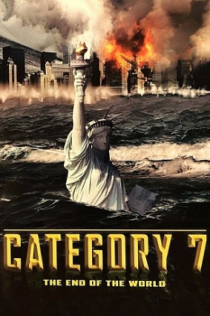

Country:Canada, 169 minutes
Spoken languages:English
Genres:Action, Thriller, Adventure, Sci-Fi, Sci-Fi
Director(s):Dick Lowry
Writer(s):Christian Ford, Roger Soffer, Matt Dorff, James LaRosa
Video Codec:Unknown
Number: 2415


Certification:
Storyline:
It's tornadoes, hurricanes, electrical storms, and mass destruction as the effects of global warming brew into a super storm that threatens to rend the earth with an unprecedented power. Beautiful scientist Faith Clavell, storm chaser Tommy Tornado, and Judith Carr, the head of FEMA, can stop the inevitable from happening-if they have the courage to venture into the roiling blackness of the storm itself.
Cast:

Medium: Original DVD,
Comments: w/ 10.5: Apocalypse
Loaned: No
Aspect ratio: Unknown